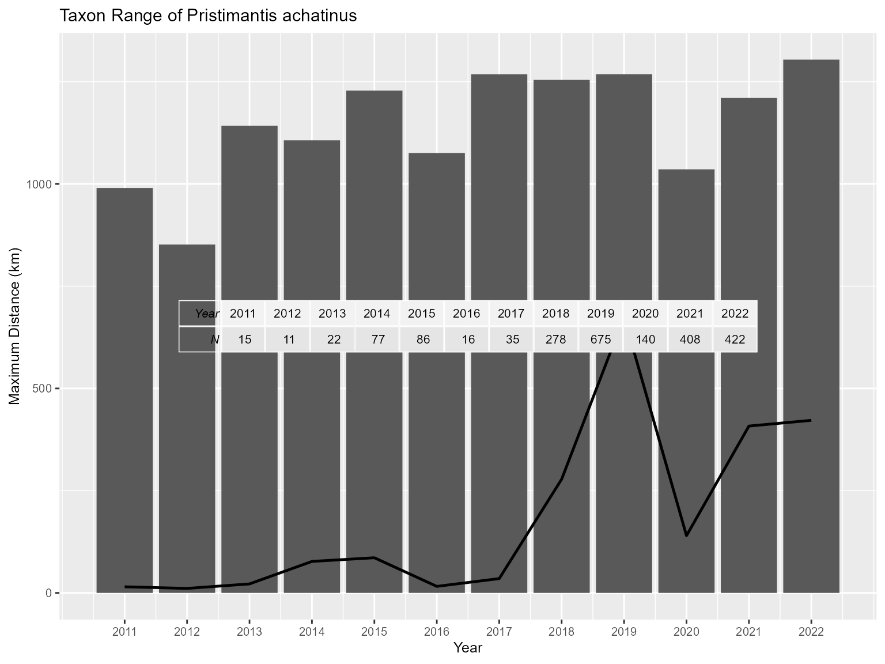
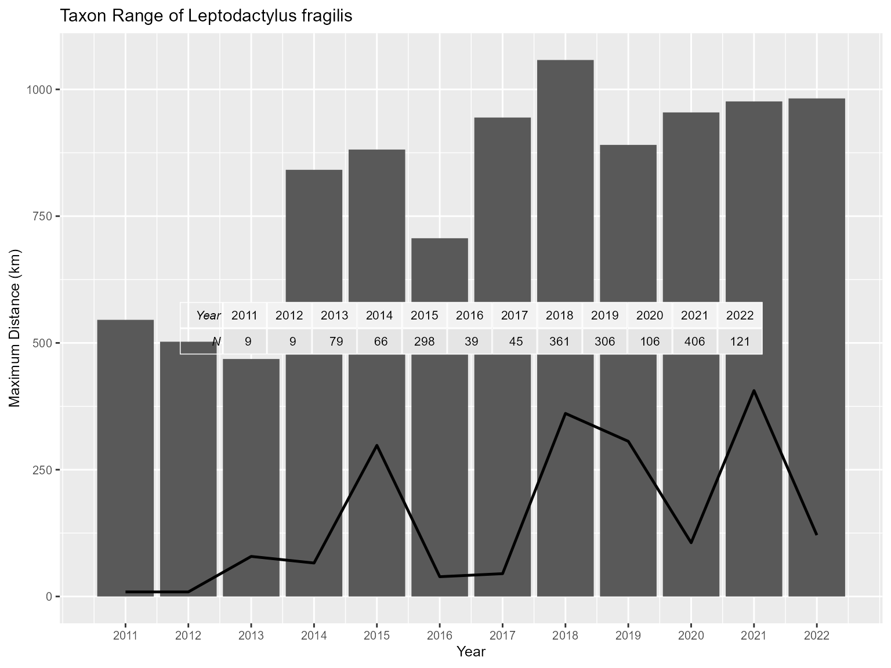
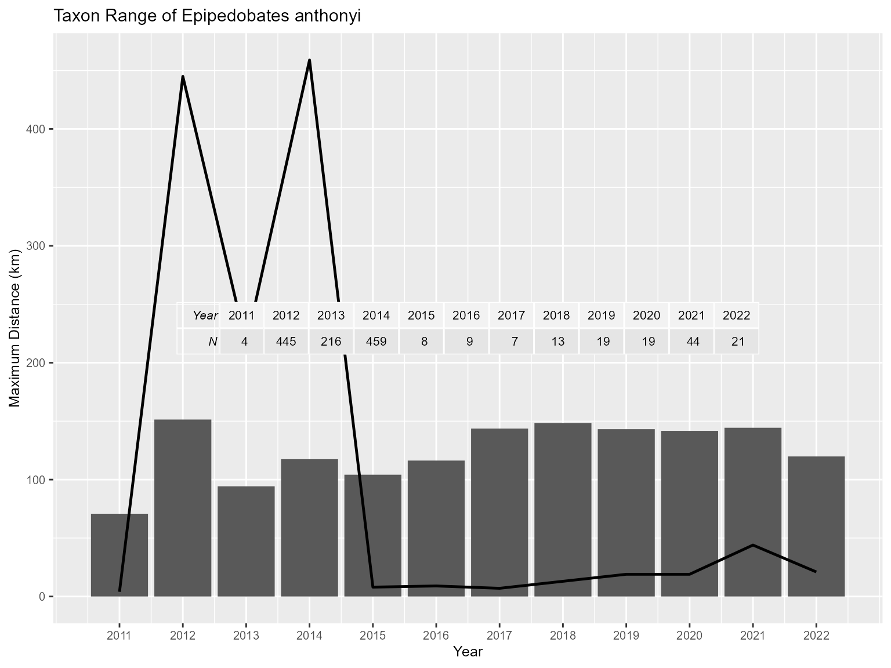

Determining Taxon Range
4-taxon_range.Rmd
library(DivInsight)
#> Warning: replacing previous import 'dplyr::combine' by 'gridExtra::combine' when loading 'DivInsight'
data("Andes")
library(dplyr)
#>
#> Attaching package: 'dplyr'
#> The following objects are masked from 'package:stats':
#>
#> filter, lag
#> The following objects are masked from 'package:base':
#>
#> intersect, setdiff, setequal, union
library(gridExtra)
#>
#> Attaching package: 'gridExtra'
#> The following object is masked from 'package:dplyr':
#>
#> combine
library(geosphere)
library(ggplot2)Introduction
The DivInsight package can be used to calculate the
physical distances between individuals in an occurrence dataset. These
values can be used as an estimate of taxon range.
Included in the package is the Andes dataset, which contains
occurrence data for the taxon ‘Amphibia’ at the Class level from 2011 to
2022. This data was queried from the Global Biodiversity Information
Facility (GBIF) database using the rgbif package. Each row
of the occurrence dataframe has data for an observed individual. The
dataset has many variables but the most important ones for the functions
in DivInsight pertain to taxa names, coordinate location,
and dates of the observations.
View occurrence dataframe
head(Andes[c(2:4, 31:32, 45)], 10)
#> # A tibble: 10 × 6
#> scientificName decimalLatitude decimalLongitude genus species eventDate
#> <chr> <dbl> <dbl> <chr> <chr> <chr>
#> 1 Chaltenobatrachus grandisonae (Lynch, 1975) -51.8 -73.3 Chaltenobatrachus Chaltenobatrachus grandisonae 2022-01-30T11:12:42
#> 2 Pleurodema bufoninum Bell, 1843 -51.0 -72.7 Pleurodema Pleurodema bufoninum 2016-03-01T06:55:00
#> 3 Pleurodema bufoninum Bell, 1843 -51.0 -72.9 Pleurodema Pleurodema bufoninum 2016-03-09T07:16:37
#> 4 Pleurodema bufoninum Bell, 1843 -51.0 -72.8 Pleurodema Pleurodema bufoninum 2019-03-10T16:32:34
#> 5 Pleurodema bufoninum Bell, 1843 -51.0 -72.8 Pleurodema Pleurodema bufoninum 2018-10-21T06:44:35
#> 6 Pleurodema bufoninum Bell, 1843 -51.0 -72.9 Pleurodema Pleurodema bufoninum 2017-10-23T12:19:28
#> 7 Pleurodema bufoninum Bell, 1843 -50.9 -72.7 Pleurodema Pleurodema bufoninum 2022-11-14T09:34:00
#> 8 Pleurodema bufoninum Bell, 1843 -51.1 -72.9 Pleurodema Pleurodema bufoninum 2022-12-12T09:37:15
#> 9 Pleurodema bufoninum Bell, 1843 -50.8 -72.7 Pleurodema Pleurodema bufoninum 2019-03-25T00:00:00
#> 10 Nannophryne variegata Günther, 1870 -49.0 -72.9 Nannophryne Nannophryne variegata 2022-01-13T11:16:54
Plot range of the three amphibian orders
The function mapStart_rangePoly() can be used to plot a
polygon on an interactive map using convex hull coordinates. This will
create a shape using the outer most coordinates in a dataset.
mapAdd_rangePoly() can be used to add polygon shapes onto
an existing map using a different set of coordinates.
In this example, all frog, salamander, and caecilian occurrence coordinates from all years available (2011-2022) in the Andes dataset are plotted to show the range of these taxa. It can be seen from this plot that frog species were observed throughout the entire Andes but salamanders and caecilians were only observed in the northern Andes.
## split the occurrence dataframe into the order classes
orders <- split(Andes, Andes$order)
## start the map with all frog occurences
map <- mapStart_rangePoly(
taxon_dataframe = orders$Anura,
site_name = "Frogs",
colour = "darkgreen",
poly_opacity = 0.4
)
## add salamander occurrences
map <- mapAdd_rangePoly(
existing_map = map,
taxon_dataframe = orders$Caudata,
site_name = "Salamanders",
colour = "darkorange",
poly_opacity = 0.4
)
## add caecilian occurrences
map <- mapAdd_rangePoly(
existing_map = map,
taxon_dataframe = orders$Gymnophiona,
site_name = "Caecilians",
colour = "darkviolet",
poly_opacity = 0.4
)
## display the map
map
Calculate taxon range of three frog species
The range in metres for a selected taxon can be calculated using
functions available in the package. Here, we subset occurrence data for
three species, and subsequently split each of these subsets into
individual years. We then use base R functions to apply
find_taxon_range() to each year for each species.
## subset the chosen species
species1 <- subset(Andes, species == "Pristimantis achatinus")
species2 <- subset(Andes, species == "Leptodactylus fragilis")
species3 <- subset(Andes, species == "Epipedobates anthonyi")
## split the species datsets by year into new objects
species1_years <- split(species1, species1$year)
species2_years <- split(species2, species2$year)
species3_years <- split(species3, species3$year)
## find the taxon range for each year of the first species and store into a datframe
taxon_range_list_sp1 <- lapply(species1_years, find_taxon_range)
taxon_range_df_sp1 <- data.frame(
Year = names(taxon_range_list_sp1),
Range_metres = as.numeric(taxon_range_list_sp1)
)
taxon_range_df_sp1
#> Year Range_metres
#> 1 2011 990169.4
#> 2 2012 851767.3
#> 3 2013 1142328.2
#> 4 2014 1106831.7
#> 5 2015 1228173.2
#> 6 2016 1075690.4
#> 7 2017 1268015.2
#> 8 2018 1254402.9
#> 9 2019 1268224.9
#> 10 2020 1035614.8
#> 11 2021 1210442.9
#> 12 2022 1303926.5
## repeat the process for the second species
taxon_range_list_sp2 <- lapply(species2_years, find_taxon_range)
taxon_range_df_sp2 <- data.frame(
Year = names(taxon_range_list_sp2),
Range_metres = as.numeric(taxon_range_list_sp2)
)
taxon_range_df_sp2
#> Year Range_metres
#> 1 2011 545535.8
#> 2 2012 502398.7
#> 3 2013 468325.1
#> 4 2014 841377.9
#> 5 2015 881342.1
#> 6 2016 706436.5
#> 7 2017 944497.5
#> 8 2018 1057903.0
#> 9 2019 890511.3
#> 10 2020 954557.9
#> 11 2021 976242.2
#> 12 2022 982148.3
## repeat the process for the third species
taxon_range_list_sp3 <- lapply(species3_years, find_taxon_range)
taxon_range_df_sp3 <- data.frame(
Year = names(taxon_range_list_sp3),
Range_metres = as.numeric(taxon_range_list_sp3)
)
taxon_range_df_sp3
#> Year Range_metres
#> 1 2011 70795.16
#> 2 2012 151402.66
#> 3 2013 94284.36
#> 4 2014 117470.00
#> 5 2015 104190.22
#> 6 2016 116284.93
#> 7 2017 143653.39
#> 8 2018 148448.50
#> 9 2019 143141.37
#> 10 2020 141705.50
#> 11 2021 144362.58
#> 12 2022 119806.26
Chart taxon range of three frog species
Visualising the taxon range data can be done very simply by applying
plot_taxon_range() to the taxon dataset. The X-axis
represents each year and the Y-axis represents the maximum distance in
kilometres between all coordinate pairs in the dataset. To allow users
to asses the validity of these results, an abundance table and abundance
line is included in this chart. This lets users make their own judgement
regarding these results.
## plot the taxon range values
plot1 <- plot_taxon_range(species1, "Taxon Range of Pristimantis achatinus")
plot2 <- plot_taxon_range(species2, "Taxon Range of Leptodactylus fragilis")
plot3 <- plot_taxon_range(species3, "Taxon Range of Epipedobates anthonyi")
## display the plots
plot1
#> Warning: Use of `taxon_range_dataframe$year` is discouraged.
#> ℹ Use `year` instead.
#> Warning: Use of `taxon_range_dataframe$taxon_range` is discouraged.
#> ℹ Use `taxon_range` instead.
#> Warning: Use of `taxon_range_dataframe$year` is discouraged.
#> ℹ Use `year` instead.
plot2
#> Warning: Use of `taxon_range_dataframe$year` is discouraged.
#> ℹ Use `year` instead.
#> Warning: Use of `taxon_range_dataframe$taxon_range` is discouraged.
#> ℹ Use `taxon_range` instead.
#> Warning: Use of `taxon_range_dataframe$year` is discouraged.
#> ℹ Use `year` instead.
plot3
#> Warning: Use of `taxon_range_dataframe$year` is discouraged.
#> ℹ Use `year` instead.
#> Warning: Use of `taxon_range_dataframe$taxon_range` is discouraged.
#> ℹ Use `taxon_range` instead.
#> Warning: Use of `taxon_range_dataframe$year` is discouraged.
#> ℹ Use `year` instead.
Create map of taxon range of three frog species
## create a map with a range polygon using the species' entire dataset then add polygons for separate years
map <- mapStart_rangePoly(species1, "Pristimantis achatinus", site_legend = F, poly_opacity = 0.4)
map <- mapAdd_rangePoly(map, species1_years[[2]], "2012", "darkred")
map <- mapAdd_rangePoly(map, species1_years[[6]], "2016", "darkblue")
map <- mapAdd_rangePoly(map, species1_years[[10]], "2020", "darkgreen")
## add the polygons for the second frog species
map <- mapAdd_rangePoly(map, species2, "Leptodactylus fragilis", "black", site_legend = F)
map <- mapAdd_rangePoly(map, species2_years[[2]], "2012", "darkred", site_legend = F)
map <- mapAdd_rangePoly(map, species2_years[[6]], "2016", "darkblue", site_legend = F)
map <- mapAdd_rangePoly(map, species2_years[[10]], "2020", "darkgreen", site_legend = F)
## add polygons for the third frog species
map <- mapAdd_rangePoly(map, species3, "Epipedobates anthonyi", "black", site_legend = F)
map <- mapAdd_rangePoly(map, species3_years[[2]], "2012", "darkred", site_legend = F)
map <- mapAdd_rangePoly(map, species3_years[[6]], "2016", "darkblue", site_legend = F)
map <- mapAdd_rangePoly(map, species3_years[[10]], "2020", "darkgreen", site_legend = F)
## display the map
map
Map the dispersal of a single species
The mapAdd_indivCirc() can be used alongside previous
functions to add circle points to represent the location of each
observed individual. In this example, subsets of different years for
this species are plotted every three years to see the dispersal and
range over time. The dispersal of this species range seems to spread out
and go south as time goes on.
## create a map with a range polygon of the species
map <- mapStart_rangePoly(species3, "Epipedobates anthonyi", "black", poly_opacity = 0.4)
## add individual circle points for separate years
map <- mapAdd_indivCirc(map, species3_years[[2]], "2012", "lightblue")
map <- mapAdd_indivCirc(map, species3_years[[5]], "2015", "deepskyblue")
map <- mapAdd_indivCirc(map, species3_years[[8]], "2018", "royalblue")
map <- mapAdd_indivCirc(map, species3_years[[11]], "2021", "navy")
## display the map
map